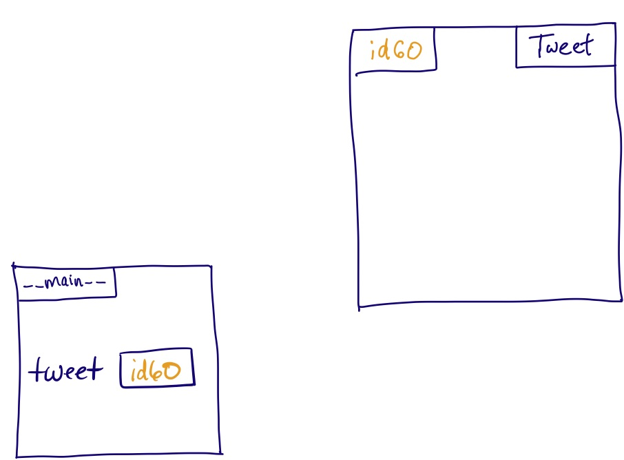
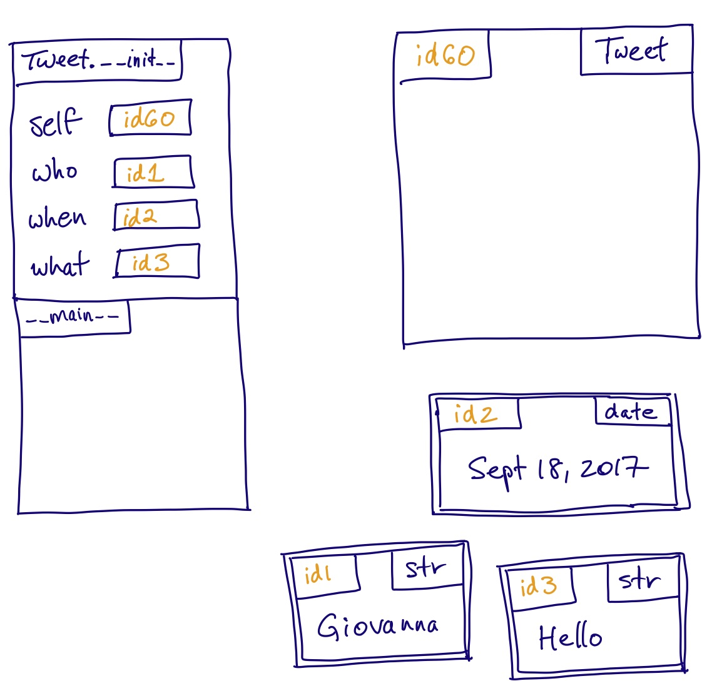
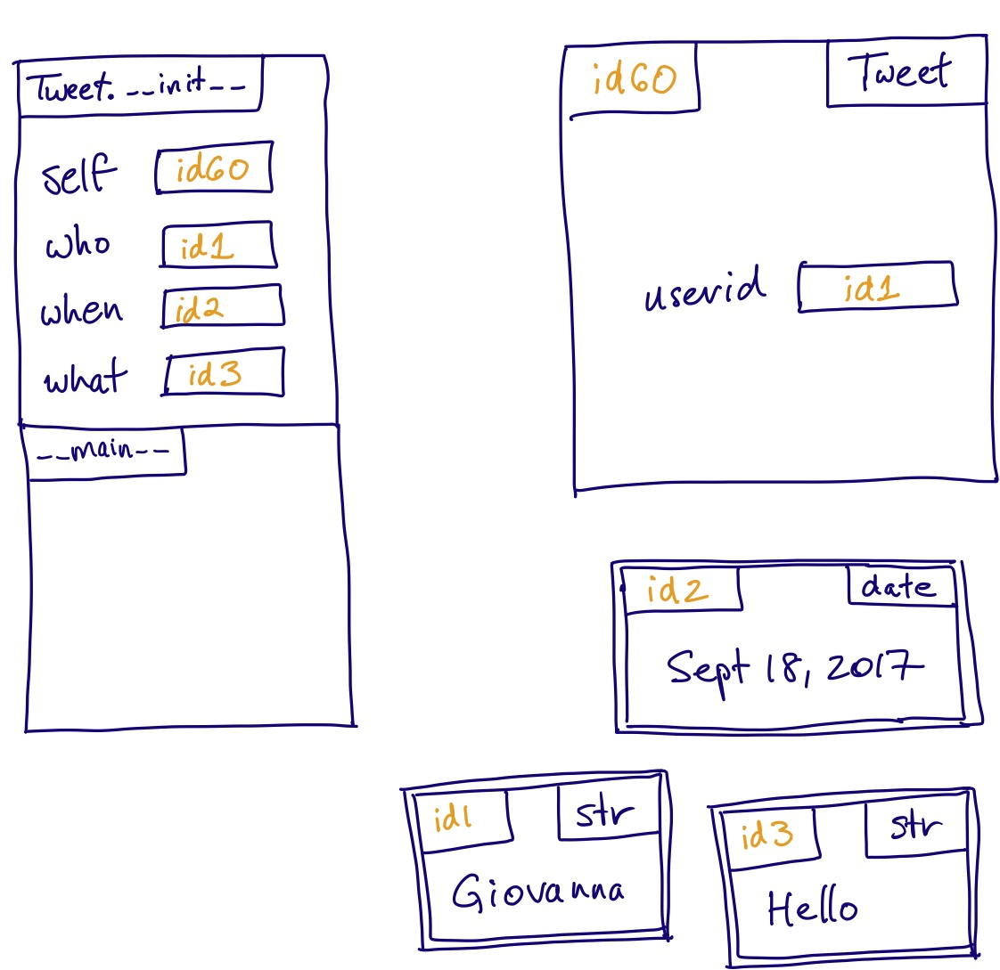
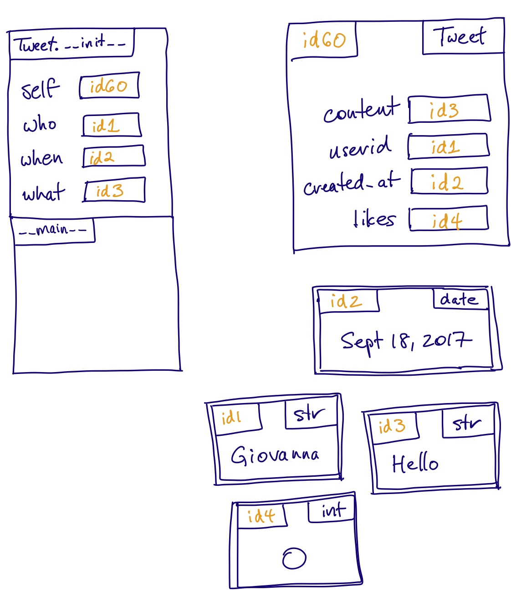
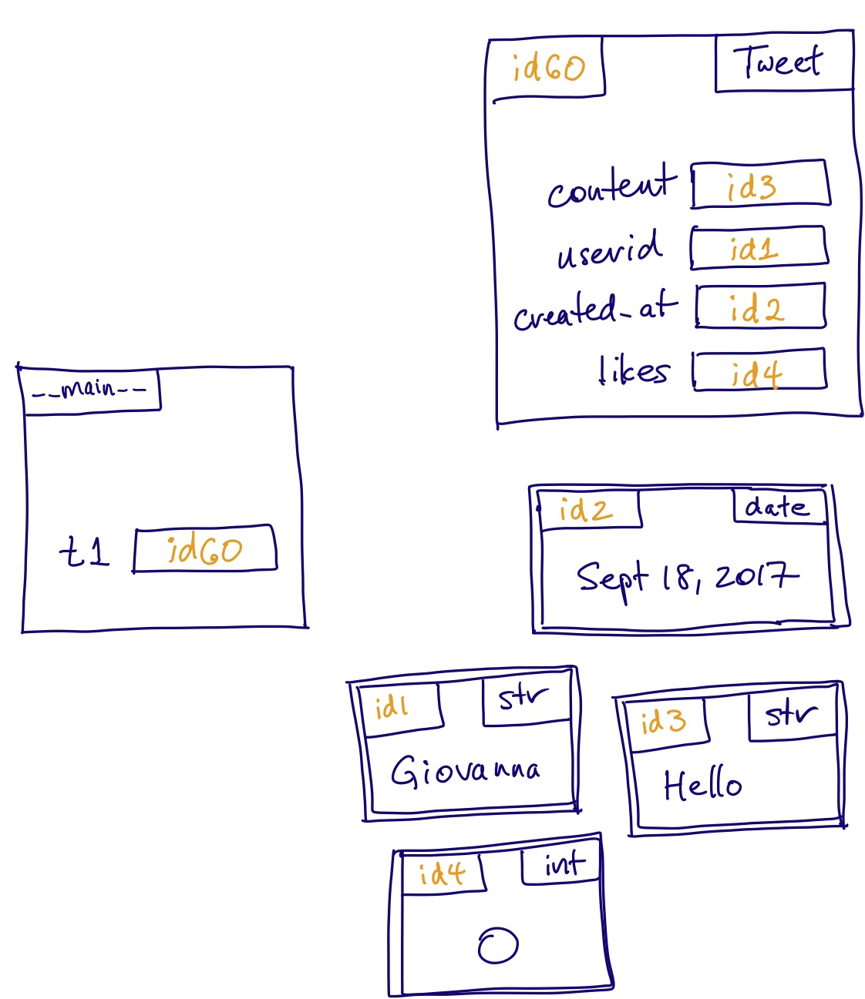

We have seen that every object in a Python program has a type, and that an object’s type governs both its possible values and the operations that can be performed on it. As the data we want to store and manipulate gets more complex, Python’s built-in types begin to feel inadequate. Fortunately, we can create our own custom types.
Twitter is a pretty successful application that allows users to broadcast short messages, called tweets. If we wanted to write a program like Twitter, we would certainly need to be able to represent a tweet in our program, including the user who wrote the tweet, when the tweet was created, the contents of the tweet, and how many “likes” the tweet has. How would we do so?
We could store the data associated with a single tweet in a list,
or a dictionary,
and then pass such objects around from function to function as needed.
You might find it interesting to compare the relative merits of the list vs. dictionary approach. But there is a serious problem with using either of them: nothing would prevent us from creating a malformed tweet object. For example, if we used a list, we could:
[55, 'Diane', 'Older and even cooler', '2017-09-19'].pop, which would remove the record of the number of people who liked the tweet.If we used a dictionary, we could:
{.python .fullwidth} { 'userid': 'Jacqueline', 'content': 'Has the most dignified cat', 'likes': 12 }t['units'] = 'centimeters'.Furthermore, with either a list or a dictionary, nothing would enforce the 280-character limit that Twitter imposes on tweets.
Notice that this objection is one of protecting against errors, and not one of absolute correctness. That is, it is certainly possible to write a perfectly correct program that represents tweets using lists or dictionaries—you’ll just probably make lots of mistakes along the way. A better solution is to create an entirely new data type for tweets. We do this by defining a class. This will allow us to specify the structure of the data precisely, and to control the operations that are performed on the data so that the data always remains well-formed.
A class is a block of code that defines a type of data. The built-in Python types that you’re familiar with like int, str, and list are all defined by classes. Suppose we have a class called X. An object whose type is X is called an instance of class X; for example, the object 3 is an instance of class int.
An instance of a class does not have to contain just a single piece of data as an int does; it can hold a collection of data bundled together. Each individual piece of data in an instance is called an instance attribute of the object.1 For example, a tweet could possess an instance attribute for the content of the tweet, and another for the user ID of the person who wrote the tweet. Classes can have an arbitrary number of attributes, and they can all be of different types: integers, floats, strings, lists, dictionaries, and even other classes.
Let’s now see how to actually do this in Python. First, we pick the name of the class, which is usually a capitalized noun. In this case, we’ll pick Tweet. We then write a docstring for the class, which gives a description of both the class and all the instance attributes of that class.
Below the docstring, we declare the type of every instance attribute; the syntax for doing so is <attribute_name>: <attribute_type>. For example, the first few lines in the Tweet class would be:
As we discussed in 1.4 Type Annotations, this Python syntax enables programming tools, including PyCharm, to check the types of attributes as we give them values and modify their values throughout our code. Don’t be fooled by the similarity to other programming languages, though! These type annotations do not create the instance variables. In fact, they have no effect when the program runs, and could actually be removed without changing the behaviour of our code. However, it is good practice to include these because, as we said, they can be understood by automated tools.
Notice that we have to document the instance attributes in two places: in the docstring (to specify their meaning) and below it (to specify their types). While this is a little awkward, keep in mind that each form of documentation serves an important purpose. Users must know the meaning of the instance attributes of a class in order to use the class, and the information needs to be in the docstring so that help can find it. Automated tools read the attribute types to help us write our code and detect bugs, and they require that the information be in the class body rather than the docstring.
After writing only this much in the class body, we have defined a new type! We can import this class and then create an instance of it like this:
This creates a new Tweet object and stores a reference to it in the variable tweet.
At this point, the new object doesn’t contain any data.
The error makes sense. Remember that a type annotation does not create a variable, so all we have in memory is this:
In order to create and initialize instance attributes for an instance of a class, we define a special method inside the class called __init__, or in English the initializer. Here is the header for an initializer method for our Tweet class:
You are likely wondering what the parameter self is for. Every initializer has a first parameter that refers to the instance that has just been created and is to be initialized. By convention, we always call it self. This is such a strong Python convention that most code checkers will complain if you don’t follow it.
To understand how self works, let’s examine how we use the initializer:
Notice that we never mention the initializer __init__ by name; it is called automatically, and the values in parentheses are passed to it. Also notice that we pass three values to the initializer, even though it has four parameters. We never have to pass a value for self; it automatically receives the id of the instance that is to be initialized. So this is what is happening in memory at the beginning of the initializer:
The initializer’s job is to create and initialize the instance attributes. Let’s write the code to do this for the attribute userid. In the case of our example, we want to add to the new Tweet object as follows:
This will require an assignment statement. What will go on the left side? We need to create a new variable called userid, but if we write userid = ... (we will figure out the right side in a moment), this will create a new variable called userid in the stack frame. We need to put it in the new object instead. Fortunately, self refers to the new object, and we can “go into” the object by writing self followed by a dot ‘.’.
So our assignment statement will be self.userid = .... What goes on the right side? We need to get id1 into the new attribute. Our parameter who stores that, and we have access to it because it is in our stack frame. So the assignment statement will be self.userid = who. We have just created an instance attribute!
Here is the full initializer method:
By the time the initializer is about to return, we have created four instance attributes in total and this is the state of memory:
and after we return, we can assign the id of the new object to t1:
With the new object properly set up and a reference to it stored, we can access each of its attributes by using dot notation.
Notice that we let the client code choose initial values for attributes who, when, and what, through passing arguments to the initializer. We do not give the client code control over the initial value for likes; instead, every Tweet object begins with zero likes. This was simply a design decision. For any initializer you write, you will have to decide which attributes will have an initial value that the client code gets control over.
Our initializer differs from the functions you are familiar with in important ways:
self, and we never have to pass a value for self.self. This is because the type of self should always be the class that this method belongs to (in our example, this is Tweet).As we will see, these differences show up in all methods that we write.
You may also notice that the return type of the initializer is None, and yet a call to the initializer seems to return the new instance. This makes sense once we know that creating a Tweet doesn’t just cause __init__ to be called. It actually does three things:
Tweet object behind the scenes.__init__ with the new object passed to the parameter self, along with the other three arguments (for who, when, and what).__init__ in Step 2.Once we define the Tweet class, how many Tweet objects can we construct? There is no limit. Each one is an object that is an instance of class Tweet. Suppose we create 25 Tweet objects. How many content variables have we created? 25. There is one for each instance of Tweet. This is why we call it an instance attribute.
A class acts as a blueprint or template: when we define the class, we specify what attributes every single instance of that class will have. This allows us to enforce a common structure on all data of the given type, which is one of the main purposes of having a type!
Now that we have our new data type, we can write functions that take in tweets as arguments, or even create and return a new tweet! Here are two simple examples:
While it is certainly possible to accomplish everything that we would ever want to do with our Tweet class by writing functions, there are downsides of doing so: these functions are separate entities from the class itself, and must be imported by any program that wants to make use of them.
Think back to how you used Python strings before you knew anything about writing your own classes. You were used to doing things like this:
It would be nice to be able to use a Tweet in this way, but we can’t; our current class provides no services other than storage of instance attributes. We can change that by moving the functions inside the class, to make them methods, which is simply the term for functions that are defined within a class.
We have seen one example of a method already: the initializer, __init__, is a special method that performs the crucial operation of initializing the instance attributes of a newly-created instance of a class. But any function that operates on an instance of a class can be converted into a method by doing the following:
class Tweet:).self.For example, we could make like a method of Tweet with the following code:
Notice that we now use parameter self to access instance attributes, just as we did in the initializer.
Now that like is a method of the Tweet class, we do not need to import it separately; importing just the class Tweet is enough. We call it using the same dot notation that we use to access an object’s attributes:
Notice that when we call tweet.like(10) we pass one argument, yet the method has two parameters, self and n. What dot notation does for a method call is automatically pass the value to the left of the dot (in this case, tweet) as the method’s first parameter self.
Again, think back to how you used Python strings before you knew anything about writing your own classes. When you wrote code like word.count('i'), you passed only the string to be searched for, in this case 'i'. How does Python know in what string to search for it? To the left of the dot we said word, so that is the string to search in. If we had written name.count('i') then name would be the string to search in. The string method count is just like the methods that we write: it has a first parameter called self that refers to the object to operate on.
A method really is just a function associated with a class, and can be referred to from the class directly, without using an instance. For example, the method countis part of the str class, and its full name is str.count. Using this, we can call it directly, just as we would any other function. The following calls are equivalent:
Similarly, now that like is a method of the Tweet class, these are equivalent:
Though we have these two alternatives, we almost always call methods on an instance directly, without referring to the class. This is because in object-oriented programming, we elevate the object as the entity of central importance. Every time we use dot notation, we are reminded that it is an object we are working with, whether we are accessing a piece of data bundled with that object or performing an operation on that object.
There is another important technical reason we use dot notation with the object, but we’ll defer that discussion until we discuss inheritance.
We just saw that methods in Python are just a special kind of function (ones that are defined within a class). Everything you already know about designing and writing functions applies equally to all methods you’ll write.
But how do we decide when to make something a function and when to make it a method? Here is the main design difference between functions and methods. Methods are part of the very definition of the class, and form the basis of how others can use the class. They are bundled together with the class, and are automatically available to every instance of the class. In contrast, functions that operate on a class instance must be imported separately before they are used. So it sounds like functions are “less useful” than methods because you need to do a bit of extra work to use them. Why not make everything a method?
When we design a class, we aren’t just designing it for ourselves, but for anyone else who might want to use that class in the future. It is impossible to predict every single thing a person will want to use a class for, and so it is impossible to write every method that could possibly ever be useful. And even if we spent a whole lot of time and energy trying to be comprehensive in defining many methods, this creates the additional problem that anyone who wants to use the class must weed through pages and pages of documentation to find the methods that are actually useful for their purpose.
Here is the rule of thumb we will use. When we write a class, we write methods for behaviours that we think will be useful for “most” users of the class, and functions for the operations that users of the class must implement themselves for their specific needs. This is a design choice, and it is not a black and white choice; judgment is required!
We said that the initializer was a special method. This is actually a technical term in Python, and is used to describe a method that we don’t have to call using the regular method call syntax. For example, we do not explicitly call __init__; it happens automatically as part of the three steps for creating a new instance of a class.
Double underscores are used around a method name to indicate that it is a special method.
As we’ll soon learn, there are other special methods. For instance, if we define a method called __str__, it will be called automatically any time we print an instance of a class, allowing us to specify how the tweet is reported. For example, this would allow us to write: